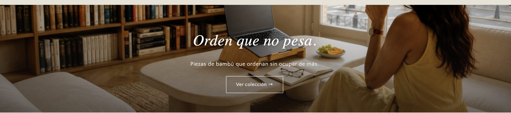

Construyendo la marca
Desarrollé la identidad de marca de principio a fin: fotografía de producto, Brand Voice y experiencia de unboxing — incluyendo el diseño del packaging y una tarjeta de agradecimiento en bambú, diseñados en Adobe Creative Suite.
Organicé el trabajo del equipo y el calendario de contenido en Trello, y gestioné la presencia en Meta Business Suite, Instagram y Facebook.
Fotos reales del proceso — no stock

Home de la tienda en vivo — fotografía de lifestyle producida por mí.
Grilla de productos — sistema de fotografía estandarizado.

Control de calidad — pieza recién salida de producción en fábrica.

Cartón de agradecimiento — diseño propio, grabado láser en bambú.